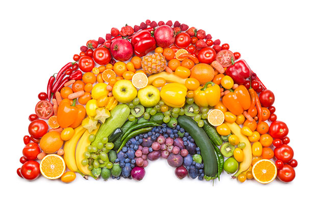

<DOCTYPE! html>
<html>
<head>
<title> Lists </title>
<link rel="stylesheet" href="style.css">
</head>
<body>
<h3> My top 5 favorite fruits: </h3>
  <ol> <li style= "color: yellow;"> Pineapple </li>
    <li style= "color: purple;"> Grape </li>
    <li style= "color: orange;"> Orange </li>
    <li style= "color: hotpink;"> Strawberry </li>
    <li style= "color: red;"> Apple </li> </ol>  
<h3> Some vegetables I like: </h3> 
  <ul> <li style= "color: orange"> Carrots </li>
    <li style= "color: rgb(38,230,0)"> Peas </li>
    <li style= "color: green"> Broccoli </li>
    <li style= "color: red"> Tomatoes </li>
    <li style= "color: brown"> Potatoes </li> </ul> 

</body>
       

